Welcome to the St. George Parish in Mount Pleasant-Racine. Our community has felt a strong calling and summons to raise a suitable temple in the glory of God and in honor of our protector and patron, St. George.
We are a community of faith, rooted in the Serbian Orthodox tradition, and we welcome all who seek God with a sincere heart.
"expressions of our thanks and love towards God and His saints"
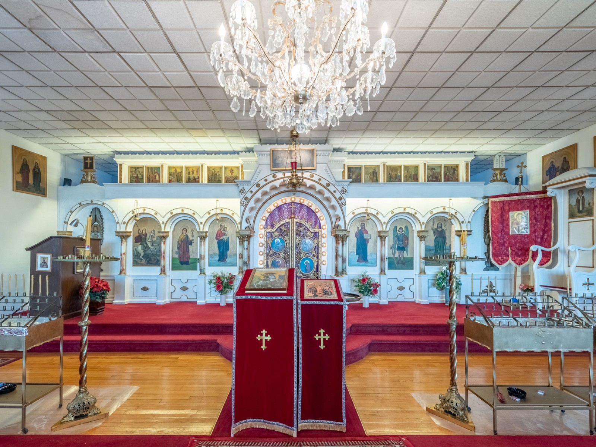
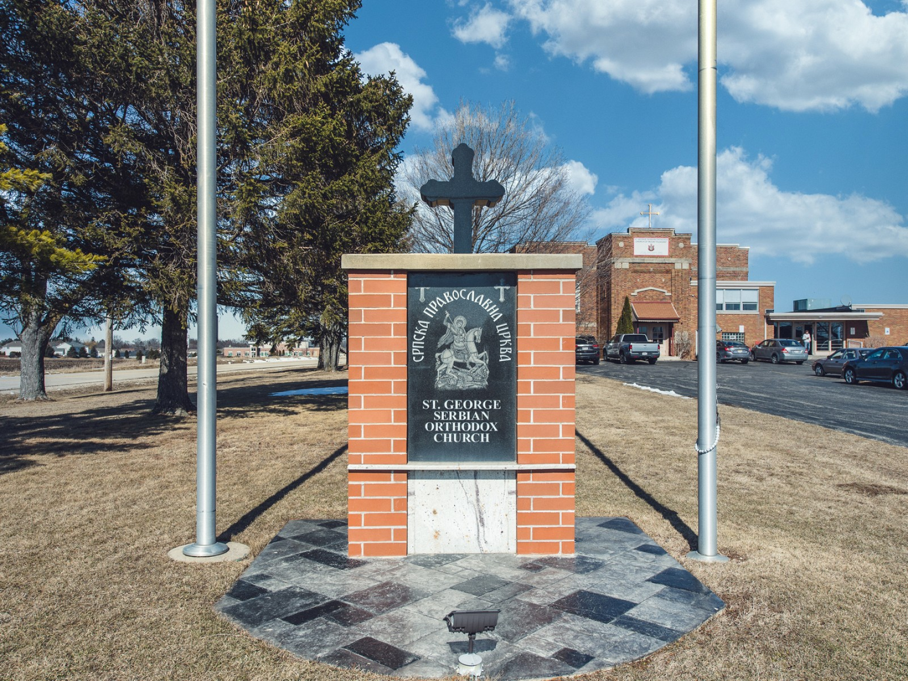
Father Predrag Samadžić was born in Visoko, Central Bosnia to a large family which originates from Old Montenegro-Herzegovina.
He completed the theological high school at the monastery Krka and studied further in Paris, Jerusalem, and Belgrade.
Fr. Predrag has served as a deacon and a priest at St. Sava Monastery in Libertyville, St. Sava Cathedral in Milwuakee, and several Chicago churches.
Father Predrag Samadžić has written several books and scientific articles, mainly focused on theological content. He translates theological texts from the following languages: Hebrew, Greek, French, and Russian.
Blessed is he who comes in the name of the Lord.
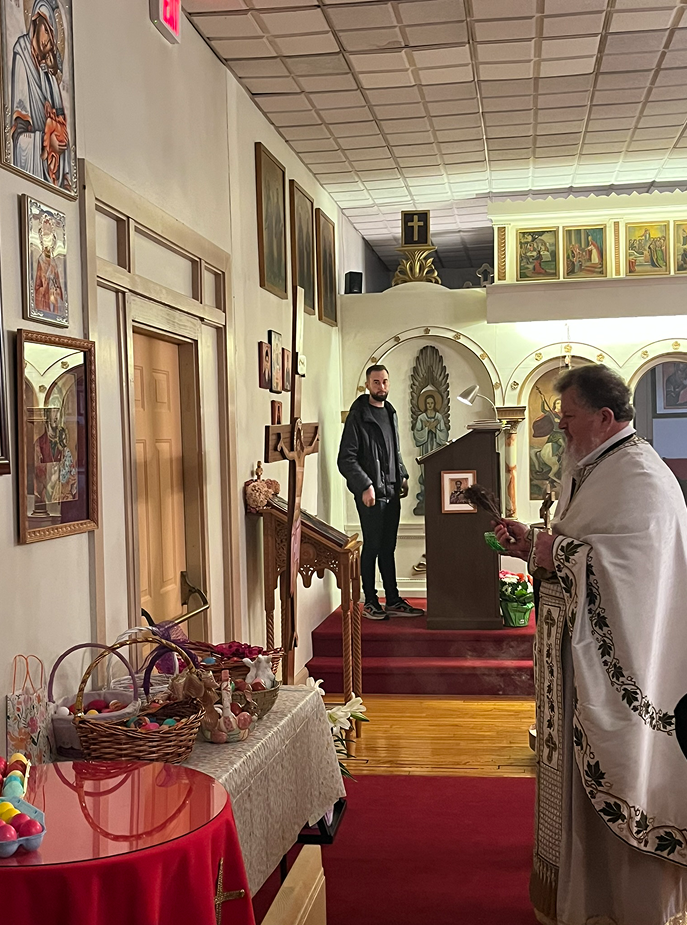
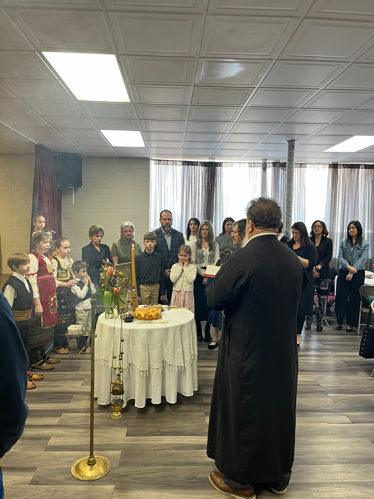
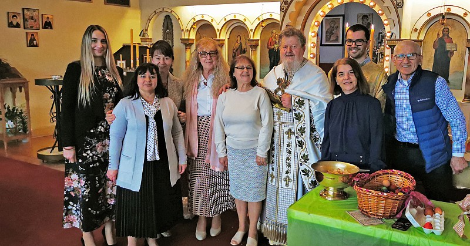
My role is to guide our board, coordinate our activities, and ensure that everything we do supports our parish and strengthens our community. I see myself as a bridge between our parishioners, clergy, and volunteers.
Our mission is to be a spiritual home for everyone seeking peace, support, and connection.
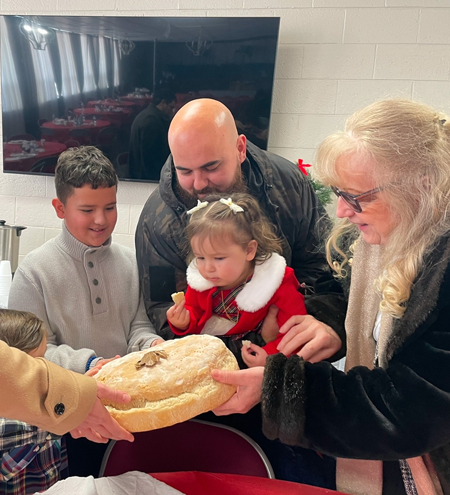
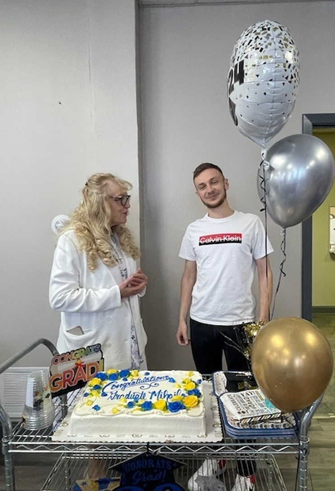
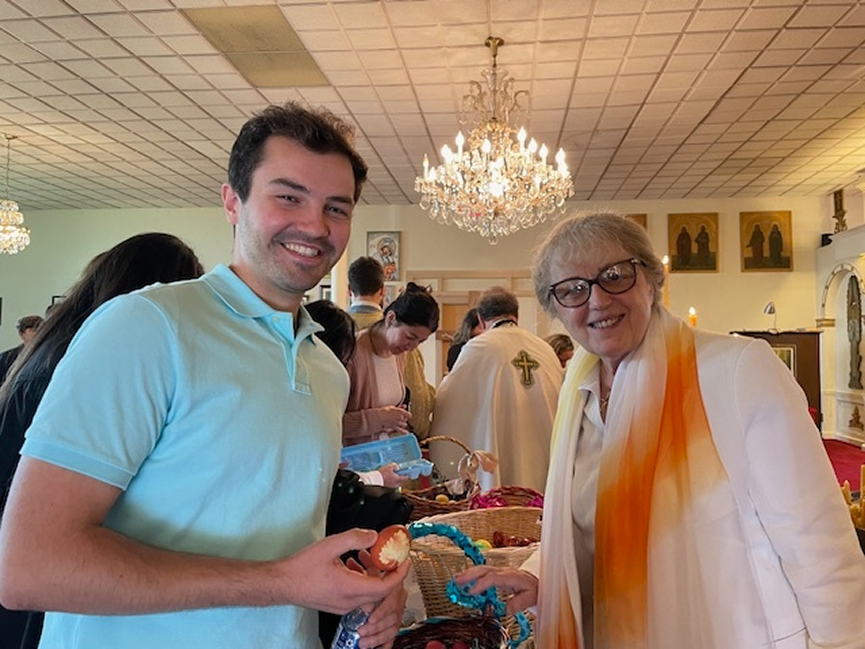
"our doors and hearts are open to you"
I am a devoted believer and I volunteer at our church. I spend a lot of time here—about three days a week—and it is never difficult for me. We want to pass on to the next generations the love for God and for the Church.
I dedicate my time to the church because I hope that through my example we can inspire more young people—so they become interested, so they learn, and so that one day they will be the ones who continue to preserve our churches, our Serbian language, and our traditions.
"Those who help build a church are investing in eternity."
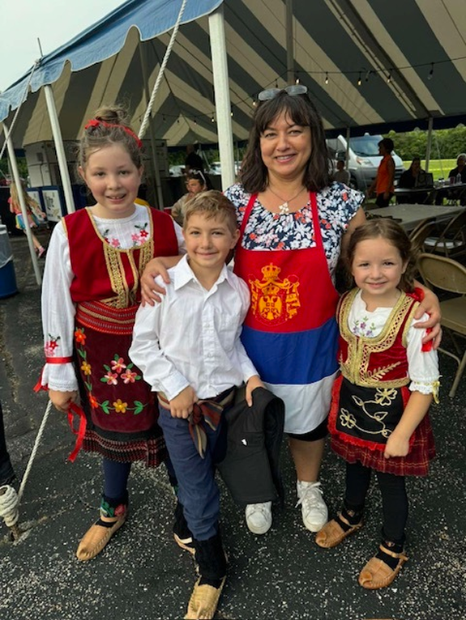
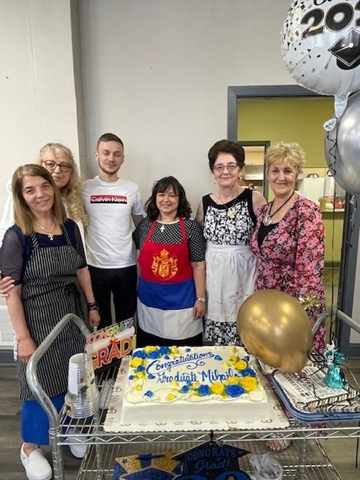
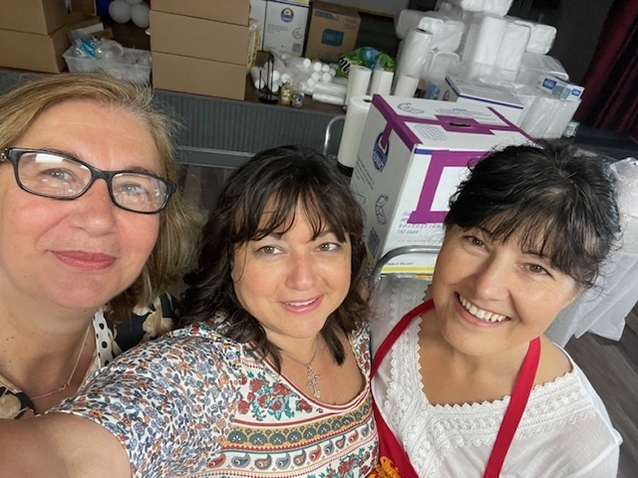
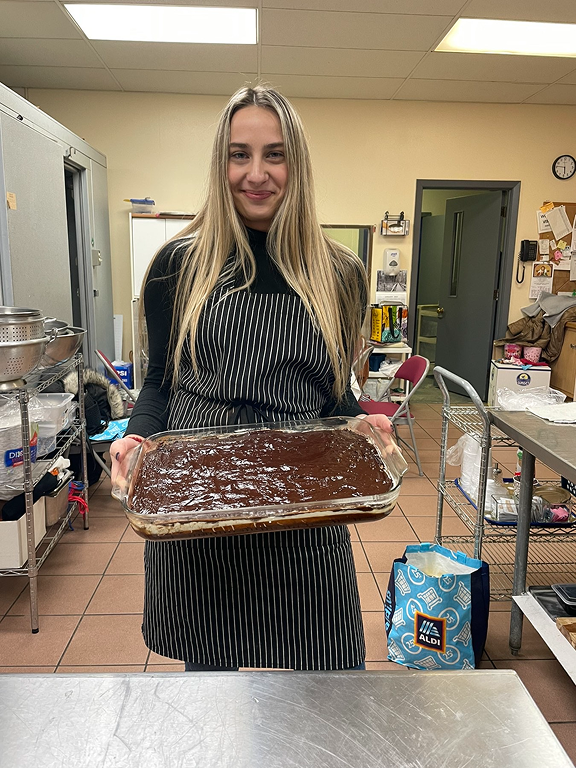